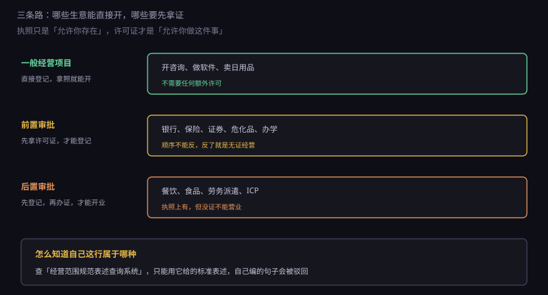
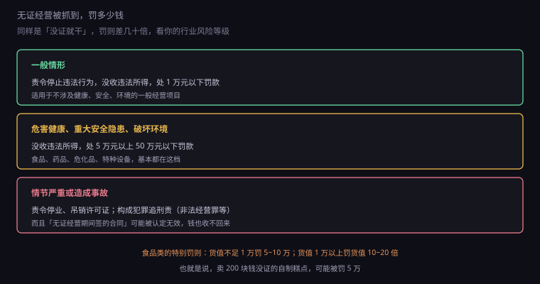
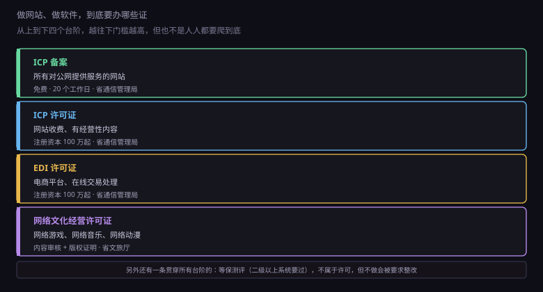

约 0.35 万字 · 3 张图 · 执照上那句"依法须经批准的项目"，是真的会罚钱
先把两件事分开：执照和许可证。
执照（营业执照）证明的是"你这个主体合法存在"。 它回答"你是谁、在哪、谁负责"。
许可证证明的是"你有资格做这件事"。 它回答"你能不能干这行"。
很多人以为有了执照就什么都能干，这是最常见的误解。 开餐馆要有食品经营许可证，办培训要有办学许可， 做付费网站要有 ICP 许可证—— 这些都不是执照能替代的。
执照上的经营范围，写的其实是你申请做什么， 而不是你已经获准做什么。 那些需要审批的项目后面会跟一句"（依法须经批准的项目， 经相关部门批准后方可开展经营活动）"—— 意思是：这一项我登记了，但许可证你还得自己去办。
按审批要求，经营范围里的项目分三类。

一般经营项目：不需要任何许可，登记了就能做。 做软件、写代码、技术咨询、设计、卖日用品、开网店卖别人的货， 大多属于这一类。这是绝大多数技术创业者会遇到的情况。
前置审批：先拿许可证，才能去登记。 顺序不能反。典型的例子：银行、保险、证券、期货、 危险化学品经营、民用爆炸物品、烟花爆竹、 民办学校（办学许可）、快递业务。
前置审批的目录是国务院公布的，目前只有三十几项， 都是涉及国家安全、公共安全、金融秩序的高风险行业。 普通人创业基本碰不到。
后置审批：先登记拿照，再去办证，办完才能开业。 这是 2015 年"先照后证"改革之后的主流模式。 食品经营、餐饮服务、药品零售、医疗器械、道路运输、 劳务派遣、人力资源服务、旅行社、出版物经营、ICP 许可， 都是这一类。
注意后置审批的坑：执照上已经写了这一项，但你没证就开业， 依然是无证经营。 很多人看到执照上有"餐饮服务"就以为可以开张了， 结果被市场监管查到，罚五万起。
写经营范围不是写作文。你不能写"做点互联网相关的小生意"， 系统会直接驳回。
所有经营范围都必须用规范表述， 来自市场监管总局的"经营范围规范表述查询系统"。 每个条目都对应国民经济行业分类里的一个类别， 背后有明确的定义和审批要求。
比如你想做软件开发，规范表述是"软件开发"； 想接技术外包，是"信息技术咨询服务"； 想卖自己做的小程序模板，可能涉及"软件开发"加"互联网销售"。
这个系统还有个好处：你输入想做的事， 它会直接告诉你这是"一般项目"还是"许可项目"， 如果是许可项目，还会列出对应的许可证名称和审批部门。 办之前先查一遍，能省掉很多来回。
顺带说一句：经营范围不是越多越好。 写太多会有两个副作用： 一是税务上可能被认定为多业经营，影响核定征收； 二是某些行业会被纳入重点监管（比如写了"食品销售"就会被定期检查）。 按实际业务写，留一点未来可能扩展的余地就够了。
这里有个很多人搞不清的区分。
超范围做一般项目：原则上不构成违法。 你登记的是"软件开发"，顺手帮客户做了个 logo 设计， 这不算事。市场监管不会因为这个罚你。 （但如果涉及需要许可的项目，性质就变了。）
超范围做许可项目：这就是无证经营。 你登记的是"技术咨询"，实际在卖自制食品， 哪怕只卖了几百块，也属于未取得食品经营许可从事食品经营。
所以判断标准不是"执照上有没有写"，而是 "这件事本身要不要许可"。 要许可的，写了也得办证；不要许可的，没写也能做 （只是建议补上，免得开票时税目对不上）。
罚则分三档，看行业风险。

一般情形：责令停止违法行为，没收违法所得， 处一万元以下罚款。依据是《无证无照经营查处办法》。
危害健康、重大安全隐患、破坏环境： 没收违法所得，处五万元以上五十万元以下罚款。 食品、药品、危化品、特种设备都在这一档。
情节严重或造成事故：责令停业、吊销许可证， 构成犯罪的追究刑事责任（非法经营罪等）。
食品行业还有更细的专门规定： 未取得食品经营许可从事食品经营， 货值不足一万的，并处五万到十万罚款； 货值一万以上的，并处货值十倍到二十倍罚款。
算一下就知道多狠：卖两百块钱没证的自制糕点，罚款五万起。 这不是"罚点钱意思一下"，是直接把小本生意罚到关门。
还有一个更隐蔽的后果：无证经营期间签的合同， 可能被认定为无效。 合同无效意味着对方可以不付钱，你也没法主张违约金。 你干了活、收了货、欠了债，法律上都不作数。
这一节专门讲跟写代码有关的部分，因为这是最容易踩坑的地方。

第一级：ICP 备案。 只要你的网站对公网提供服务、用的是国内服务器，就必须备案。 免费，通过接入服务商（阿里云、腾讯云）提交， 管局审核一般 20 个工作日。 备案号要挂在网站底部。
注意备案和许可是两件事。 备案是"我知道你存在"，许可是"我允许你经营"。 个人博客、企业官网做备案就行。
第二级：ICP 许可证（增值电信业务经营许可证-信息服务业务）。 什么时候需要？你的网站通过互联网有偿提供信息或服务。 比如会员收费、内容付费、在线广告位出租、 或者你做一个平台让双方在上面交易并抽成。
门槛不低：注册资本 100 万以上（省内经营）， 有 3 名以上员工的社保记录，有域名和服务器， 有健全的网络与信息安全保障措施。 受理单位是省通信管理局，周期两三个月。
第三级：EDI 许可证（在线数据处理与交易处理业务）。 典型场景是电商平台：你提供一个平台， 让商家入驻、用户下单、平台处理交易。 它和 ICP 许可证经常一起办，业内叫"双证"。
第四级：网络文化经营许可证。 涉及网络游戏、网络音乐、网络动漫、网络演出剧目的经营性活动， 要去省文旅厅办这个证。 游戏还额外涉及版号（网络游戏电子出版物审批）， 那是另一套更严的流程。
还有一条贯穿所有层级的：等保测评。 它不是许可证，是《网络安全法》要求的等级保护义务。 二级以上系统要定期测评、备案， 不做的话被查到会被责令整改、警告、罚款。 后面 8.7 会专门讲。
给几条实操建议。
第一，主营放第一条。 经营范围的第一项通常被视为主营业务， 影响税务登记的主行业、发票的常用税目、 以及某些统计口径。把最赚钱、最常开票的那项写第一。
第二，按业务链写全。 做软件外包的，通常要写： 软件开发、信息技术咨询服务、信息系统集成服务、 数据处理服务。少写一项，开票时可能找不到对应税目。
第三，别写自己不会做的。 写了"食品销售"就要接受食品监管， 写了"道路运输"就要有车辆和司机资质。 经营范围是承诺，不是愿望清单。
第四，许可项目单独确认。 如果系统提示某一项是许可项目，先别急着勾。 去查清楚这个证好不好办、要多少钱、要多久。 办不下来，勾了也是白勾，还多了个"应办未办"的把柄。
第五，留一点余地。 可以加一两项未来可能做的（比如"互联网销售"）， 但不要一次写二十项。改一次经营范围要跑一趟变更， 但写太杂会带来监管和税务上的麻烦。
业务变了怎么办？办经营范围变更。
流程不复杂：股东会决议修改章程 → 在市场监管网上提交变更申请 → 换发新执照（现在多是电子执照，线上就能拿到）→ 同步税务信息。
如果是新增许可项目，顺序要注意： 先确认能不能拿到许可证，再去变更经营范围。 反过来的话，执照上挂着一个永远办不下证的项目， 年报时会被问，检查时会被查。
减项也一样要变更。有些人把不做的业务留在执照上， 觉得"留着以后可能用"。 风险是：这项业务如果涉及许可或特殊监管， 你就在监管名单里，会被定期检查。 不做的就删掉，干净。